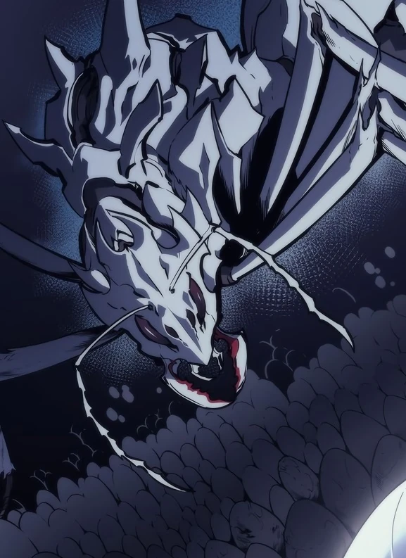

Ant Queen
Affiliation: Magical Beasts
Class: S Rank
Parents: Unknown
Biography
The Ant Queen is the ruler of the Jeju Island Dungeon and the mother of countless ant soldiers. She is a formidable foe with immense power and intelligence.
Abilities
-
🔸 Hive Mind
The Ant Queen can command her entire colony with a single thought, coordinating attacks with precision and efficiency.
-
🔸 Regeneration
Her body possesses incredible regenerative abilities, allowing her to recover from injuries rapidly.
-
🔸 Acidic Spray
She can emit a powerful acidic spray capable of melting through armor and causing devastating damage to her enemies.